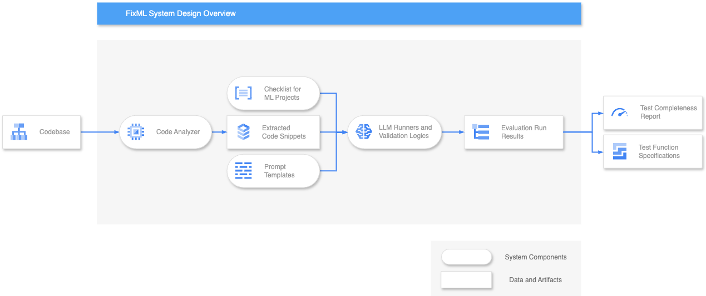
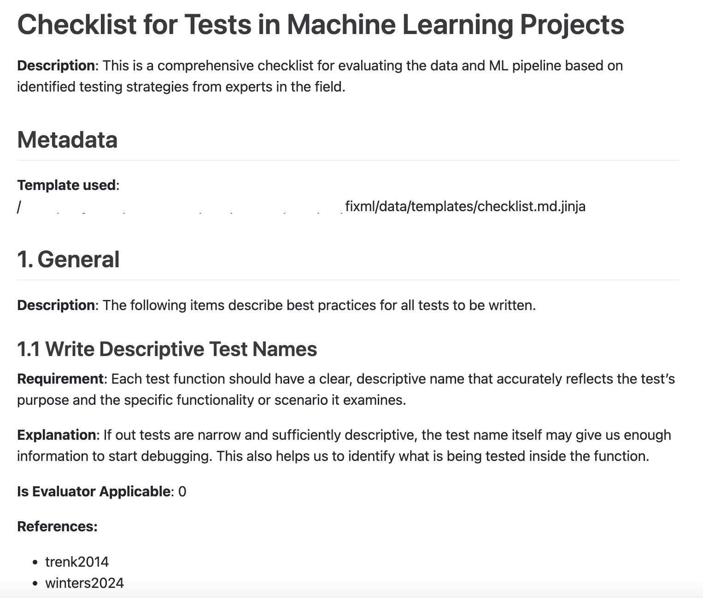
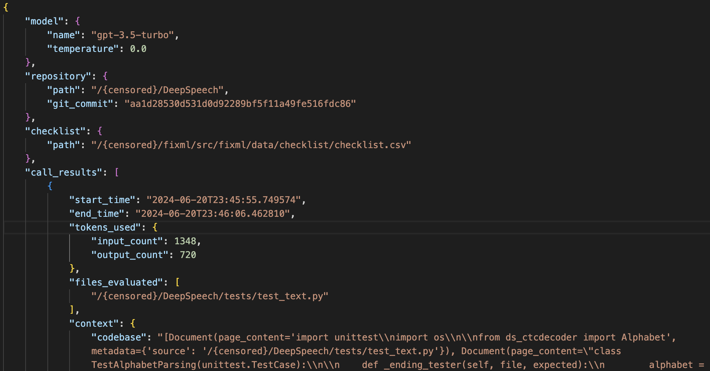
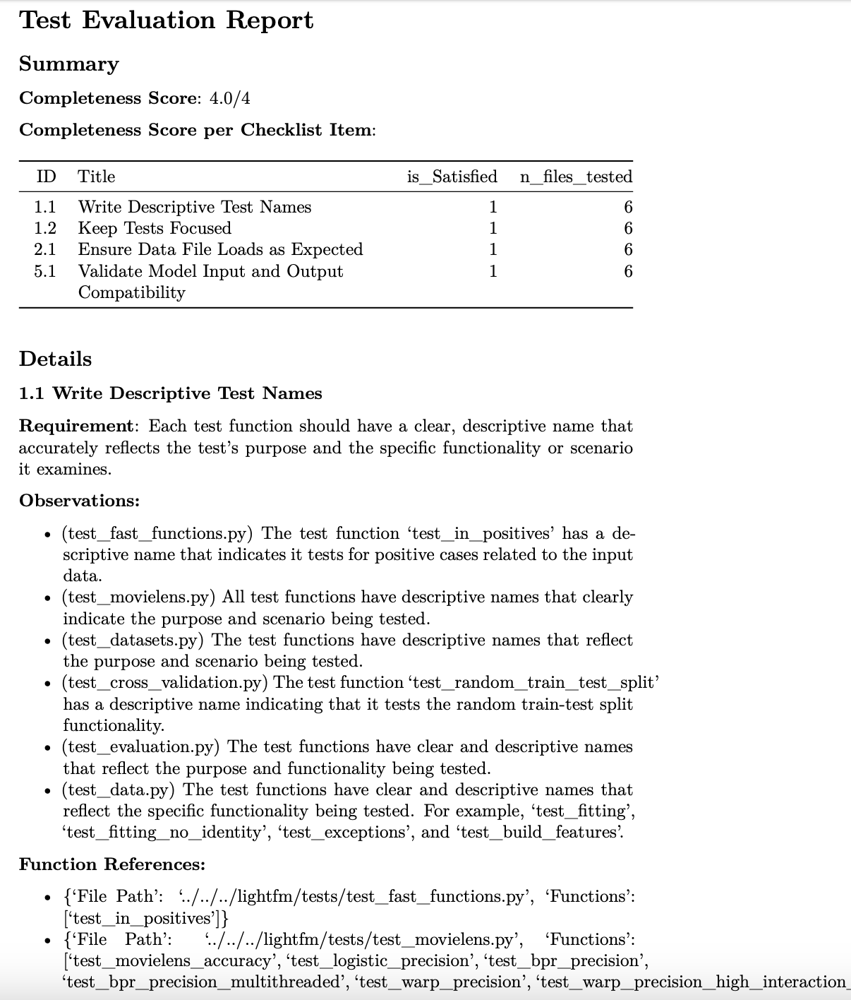
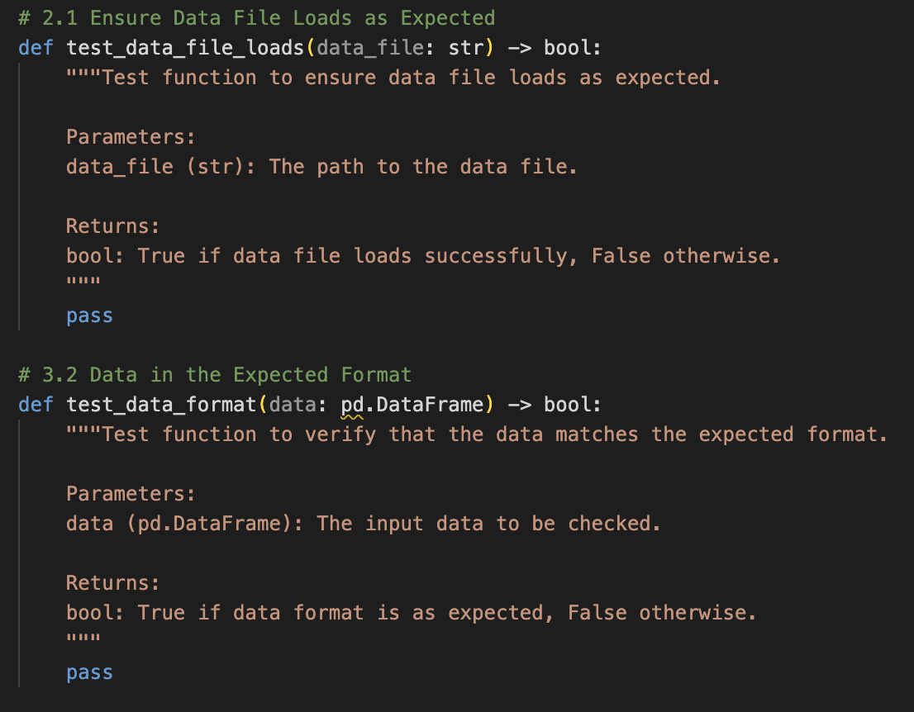

Final Report - Checklists and LLM prompts for efficient and effective test creation in data analysis
by John Shiu, Orix Au Yeung, Tony Shum, Yingzi Jin
Executive Summary
The global artificial intelligence (AI) market is expanding rapidly, with demand for robust quality assurance for Machine Learning (ML) systems, to prevent risks such as misinformation, social bias, financial losses, and safety hazards. FixML addresses these challenges by offering an automated code review tool embedded with best practices for ML test suites, curated from ML research and industry standards.
Our approach includes developing the tool called FixML, a Python package based on large language models (LLMs), and creating comprehensive checklists to enhance ML software’s trustworthiness, quality, and reproducibility. The tool analyzes ML projects, compares test suites against best practices, and delivers evaluations and test specifications. This functionality can significantly reduce the time and effort required for manual assessments.
We defined two success metrics to ensure reliability: accuracy (comparison with human expert judgments) and consistency (standard deviation across multiple runs). Our findings indicated that while our tool is effective, there is room to improve in both metrics, by further prompt engineering and refinement for enhanced performance.
The FixML package is available on PyPI and can be used as a user-friendly and versatile CLI tool and a high-level API. Future improvements will focus on specialized checklists, enhanced evaluators, customized test specifications, and other optimizations to improve ML system quality and user experience.
Introduction
Problem Statement
The global AI market is growing exponentially (Grand-View-Research 2021), driven by its ability to autonomously make complex decisions impacting various aspects of human life, including financial transactions, autonomous transportation, and medical diagnosis. However, ensuring the software quality of these systems remains a significant challenge (Openja et al. 2023). Specifically, the need for a standardized and comprehensive approach to testing ML systems introduces potential risks to stakeholders. For example, inadequate quality assurance in ML systems can lead to severe consequences, such as misinformation (Belanger 2024), social bias (Nunwick 2023), substantial financial losses (Regidi 2019), and safety hazards (Shepardson 2023). Therefore, it is crucial to define and promote an industry standard and establish robust testing methodologies for these systems. But how?
Our Objectives
We propose to develop testing suite diagnostic tools based on LLMs and curate checklists based on ML research papers and best practices to facilitate comprehensive testing of ML systems with flexibility. We aim to enhance applied ML software’s trustworthiness, quality, and reproducibility across the industry and academia (Kapoor and Narayanan 2022).
Data Science Methods
Current Approaches
Comprehensive testing is essential to ensure the reproducibility, trustworthiness, and lack of bias in ML systems. We outlined some traditional approaches for assessing the completeness of ML system tests and their advantages and drawbacks.
Code Coverage
Code coverage measures the proportion of program source code executed when running a test suite. It is widely used in software development to quantify test quality and is scalable due to its short processing time. However, code coverage cannot indicate the reasons or specific ML areas where the test suites fall short in the context of ML system development.
Manual Evaluation
Manual evaluation involves human experts reviewing the source code, who can consider the business logic and identify vulnerabilities. It often provides context-specific improvement suggestions and remains one of the most reliable practices (Openja et al. 2023; Alexander et al. 2023). However, manual evaluation is time-consuming and not scalable due to the scarcity of human experts. Moreover, experts may emphasize different ML test areas, and may not have a comprehensive and holistic review of the ML system test suites.
Our Approach
Our approach is to deliver an automated code review tool embedded with the best practices of ML test suites. This tool educates ML users on best practices while comprehensively evaluating their ML system codes.
We established these best practices using data from ML research papers and well-recognized online resources. In collaboration with our partner, we researched industrial best practices (Team 2023; Jordan 2020) and academic literature (Openja et al. 2023), and consolidated testing strategies into a human-readable and machine-friendly checklist that can be embedded into the automated tool.
We collected 11 GitHub repositories of ML projects for development as studied in (Openja et al. 2023). These Python-based projects include comprehensive test suites. Our tool should be able to analyze these test suites, compare them with embedded best practices, and deliver evaluations.
Our approach will provide scalable and reliable test suite evaluations for multiple ML projects. However, due to time constraints, we recognize that our current best practices only focus on a few high-priority test areas. We plan to expand this scope in the future. While our tool’s evaluations are less reliable than human evaluations, we will quantify its performance.
Success Metrics
To assess the performance of our tool, which leverages LLMs capability, we have referred to the methods in (Alexander et al. 2023) and defined two success metrics: accuracy and consistency. These metrics will help users (researchers, ML engineers, etc.) gauge the trustworthiness of our tool’s evaluation results.
Accuracy vs Human Expert Judgement
We run our tool on ML projects from (Openja et al. 2023) to obtain evaluation results for each ML checklist item. These results are then compared with our manually assessed ground truth data based on the same criteria. Accuracy is the proportion of matching results to the total number of results.
Consistency
We perform multiple runs on each ML project to obtain evaluation results for each checklist item. Consistency is measured by calculating the standard deviation of these results across multiple runs for each project.
Data Product & Results
Data Products
Our solution includes a curated checklist for robust ML testing and FixML, a Python package for checklist-based evaluation of ML projects’ testing robustness using LLMs. The package is publicly available on the Python Packaging Index (PyPI).
Justifications for these products are:
Checklists have been shown to reduce errors in software systems and promote code submissions (Gawande 2010; Pineau et al. 2021).
Python is widely used in ML, compatible with various OSes, and integrates well with LLMs. These ensure the ease of use and development.
How to use FixML
There are two ways to make use of FixML:
As a CLI tool. The FixML package provides a runnable command fixml. Once installed, users can perform codebase evaluations, generate test function specifications, and more by running subcommands under fixml in the terminal.
As a high-level API. Users can import necessary components from the FixML package into their systems. Documentation is available through docstrings.
By offering FixML as a CLI tool and API, our product is user-friendly and versatile enough to support various use cases, such as web application development and scientific research.
System Design

Figure 1: A diagram showing the high-level overview of FixML system design. The oval-shaped items are the various components, each with a different responsibility in the pipeline. While the square-shaped items denote the data and artifacts ingested, processed, and produced by the system at different parts of the pipeline. The arrows show the flow of data from outside the system, i.e., the codebase, then processed into code snippets and attached to the constructed prompt with checklist and prompt templates, and finally transformed into run results.
Our package’s design follows object-oriented and SOLID principles and is fully modular. Users can easily switch between different prompts, models, and checklists. This design facilitates code reusability and collaboration to extend its functionality.
There are five components in the system of our package:
Code Analyzer
FixML extracts test suites from the input codebase to ensure only the most relevant details are provided to LLMs given token limits.
Prompt Templates
FixML stores prompt templates for instructing LLMs to generate responses in the expected format.
Checklist
FixML reads the curated checklist from a CSV file into a dictionary with a fixed schema for LLM injection. The package includes a default checklist for distribution.
Runners
FixML includes the Evaluator module, which assesses each test suite file using LLMs and outputs evaluation results, and the Generator module, which creates test specifications. Both modules feature validation, retry logic, and record response and relevant information.
Parsers
FixML reads the report templates and converts the Evaluator’s responses into evaluation reports in various formats (QMD, HTML, PDF) using the Jinja template engine, which enables customizable report structures.
Checklist Design
The embedded checklist contains best practices for testing ML pipelines and is curated from ML research and recognized online resources. Prompt engineering is applied to further improve LLM performance and mitigate LLM hallucinations (Zhang et al. 2023) by ensuring strict adherence to the checklist.
Table 1: The checklist’s structure is in CSV format. Users can easily modify and expand the checklist by adding new rows to the CSV file.
Column
Description
ID
Unique Identifier of the checklist item
Topic
Test Area of the checklist item
Title
Title of the checklist item
Requirement
Prompt for the checklist item to be injected into LLMs for evaluation
Explanations
Detailed explanations for human understanding
Reference
References for the checklist item, e.g. academic papers
Is Evaluator Applicable
Indicates if the checklist item is used during evaluation (0 = No, 1 = Yes)

Figure 2: An example of the checklist exported in PDF format. Users can easily read and distribute the checklist.
Artifacts
Using our package results in three artifacts:
Evaluation Responses
The evaluation responses include LLM evaluation results and process metadata stored in JSON format. These responses support various downstream tasks, such as report rendering and scientific research, by selectively extracting information.

Figure 3: An example of the evaluation responses, which includes call_results for evaluation outcomes and details about the model, repository, checklist, and the run.
Evaluation Report
The evaluation report provides a well-structured presentation of evaluation results for ML projects. It includes a summary of the completeness score and a detailed breakdown explaining each checklist item score.

Figure 4: An example of the evaluation report exported in PDF format using our default template. Users can customize their reports by creating their own templates.
Test Specification Script
The test specification script is a generated Python script, storing the specification of the test function corresponding to each checklist item.

Figure 5: An example of the generated test specifications.
Evaluation Results
As described in Success Metrics, we conducted 30 iterations on each repository from (Openja et al. 2023) and examined the breakdown of the completeness score to assess our tool’s evaluation quality.
Accuracy
Accuracy is our primary consideration since our tool’s value depends on its ability to align with expert judgment. We targeted 3 of the repositories for human evaluation: lightfm, qlib, DeepSpeech. We compared and plotted the graph to illustrate how well our tool’s outputs align with the ground truth.
Code
import pandas as pdgt = pd.read_csv('../data/processed/ground_truth.csv')gt
Table 2: Ground truth scores for 3 repositories per checklist item based on human evaluation. (1 = fully satisfied, 0.5 = partially satisfied, 0 = not satisfied)
Figure 6: Analysis of the accuracy of the scores per checklist item. The black dot and line represent the mean and standard deviation of scores from the tool, while the green diamond represents the ground truth score for a single repository. The result shows that our tool tends to underrate satisfactory cases.
When examining accuracy, we observed that our tool effectively identifies non-satisfying cases. However, our tool often classifies fully satisfied items as partially satisfied and partially satisfied items as not satisfied. This observation indicates that our tool achieves a certain degree of accuracy. The following questions we consider are:
Are there other factors that impact the performance of our tool?
In what direction can we improve our tool?
Consistency
Consistency is another consideration because it directly impacts the reliability of the evaluation results from a user’s perspective. Given that LLM-generated completeness scores contain some randomness, we plotted the uncertainty of these scores across checklist items and repositories to show how consistent these results were.
Figure 7: Analysis of the uncertainty of scores (measured in standard deviation on a scale of 0 to 1) per checklist item. Each dot represents the uncertainty of scores from 30 runs of a single repository. The analysis shows different patterns across checklist items.
When we examined the consistency, we observed various patterns and sought to identify potential causes, which could provide ideas for improvements. We identified two categories with diverging patterns:
High Uncertainty
Items like 6.1 Verify Evaluation Metrics Implementation showed high standard deviations across repositories (median = 0.12). These high standard deviations might suggest potential issues with prompt quality for the LLM to produce consistent results. The issues could be mitigated through improved prompt engineering.
Outliers with High Uncertainty
Items like 2.1 Ensure Data File Loads as Expected had outliers with exceptionally high standard deviations, possibly due to unorthodox repositories. A careful manual examination is required for a more definitive conclusion.
Comparison among LLMs
To evaluate if newer LLMs improve performance, we obtained outputs from gpt-4o and gpt-4-turbo on the lightfm repository. We plotted the graph to compare how our tool performs in terms of accuracy and consistency when switching the LLMs.
By comparing with the results from gpt-3.5-turbo (shown in Figure 6), we observed an increase in consistency using newer LLMs given the smaller standard deviations. However, we found that gpt-4o returned “Satisfied” for all items. At the same time, gpt-4-turbo deviated more from the ground truth for items 3.5 Check for Duplicate Records in Data, 5.3 Ensure Model Output Shape Aligns with Expectation compared to gpt-3.5-turbo.
Figure 8: Analysis of the scores per checklist item on repository lightfm using different GPT versions. The black dot and line represent the mean and standard deviation of scores from the tool, while the green diamond represents the ground truth score.
The graph suggests a potential consistency and accuracy improvement when switching to newer LLMs. However, the graph also indicates that what works well with the current LLM may not perform well with newer models. The result implies the need to explore different structures, such as prompt engineering for gpt-4-turbo.
Conclusion
The need for better quality assurance in ML systems and the current limitations of traditional testing methods on ML projects has driven the development of FixML. FixML provides curated checklists and automated tools that enhance evaluating and creating test suites for ML projects. FixML significantly reduces the time and effort required to assess the completeness of ML test suites, thus promoting thorough and efficient assessment of ML projects.
Limitation & Future Improvement
While FixML provides substantial benefits, there are limitations and areas to be addressed in future development:
Specialized Checklist
Although the default checklist is general and may not cover all requirements for different ML projects, the current checklist structure allows users to edit the checklist easily (shown in Table 1). Future development will focus on creating specialized checklists for tailored evaluations across various domains and project types. Collaboration with ML researchers is welcomed for creating specialized checklists based on specific use cases.
Enhanced Test Evaluator
As shown in session Evaluation Results, there are potential accuracy and consistency issues on the evaluation results using the OpenAI gpt-3.5-turbo model (shown in Figure 6, Figure 7). Future improvements involve better prompt engineering techniques and support for multiple LLMs for enhanced performance and flexibility. User guidelines in prompt creation will be provided to facilitate collaboration with ML developers.
Customized Test Specification
As shown in Figure 5, the current generator produces general test function skeletons without project-specific details. Future developments will integrate project-specific information to deliver customized test function skeletons, encouraging users to create comprehensive tests.
Further Optimization
The cost associated with LLM usage is an essential consideration for users of our tool. Future improvements will include sharing our cost data and calculating estimated costs (e.g., cost per line of code). The cost information will help users assess their expenses and conduct a cost-benefit analysis to make informed decisions using our tool.
By addressing these limitations and implementing future improvements, we aim for FixML to achieve better performance, contribute to developing better ML systems, and ultimately enhance human life.
References
Alexander, Rohan, Lindsay Katz, Callandra Moore, and Zane Schwartz. 2023. “Evaluating the Decency and Consistency of Data Validation Tests Generated by LLMs.”arXiv Preprint arXiv:2310.01402.
Gawande, Atul. 2010. Checklist Manifesto, the (HB). Penguin Books India.
Grand-View-Research. 2021. “Artificial Intelligence Market Size, Share & Trends Analysis Report by Solution, by Technology (Deep Learning, Machine Learning), by End-Use, by Region, and Segment Forecasts, 2023 2030.” Grand View Research San Francisco.
Openja, Moses, Foutse Khomh, Armstrong Foundjem, Zhen Ming, Mouna Abidi, Ahmed E Hassan, et al. 2023. “Studying the Practices of Testing Machine Learning Software in the Wild.”arXiv Preprint arXiv:2312.12604.
Pineau, Joelle, Philippe Vincent-Lamarre, Koustuv Sinha, Vincent Larivière, Alina Beygelzimer, Florence d’Alché-Buc, Emily Fox, and Hugo Larochelle. 2021. “Improving Reproducibility in Machine Learning Research (a Report from the Neurips 2019 Reproducibility Program).”Journal of Machine Learning Research 22 (164): 1–20.
Zhang, Yue, Yafu Li, Leyang Cui, Deng Cai, Lemao Liu, Tingchen Fu, Xinting Huang, et al. 2023. “Siren’s Song in the AI Ocean: A Survey on Hallucination in Large Language Models.”https://arxiv.org/abs/2309.01219.